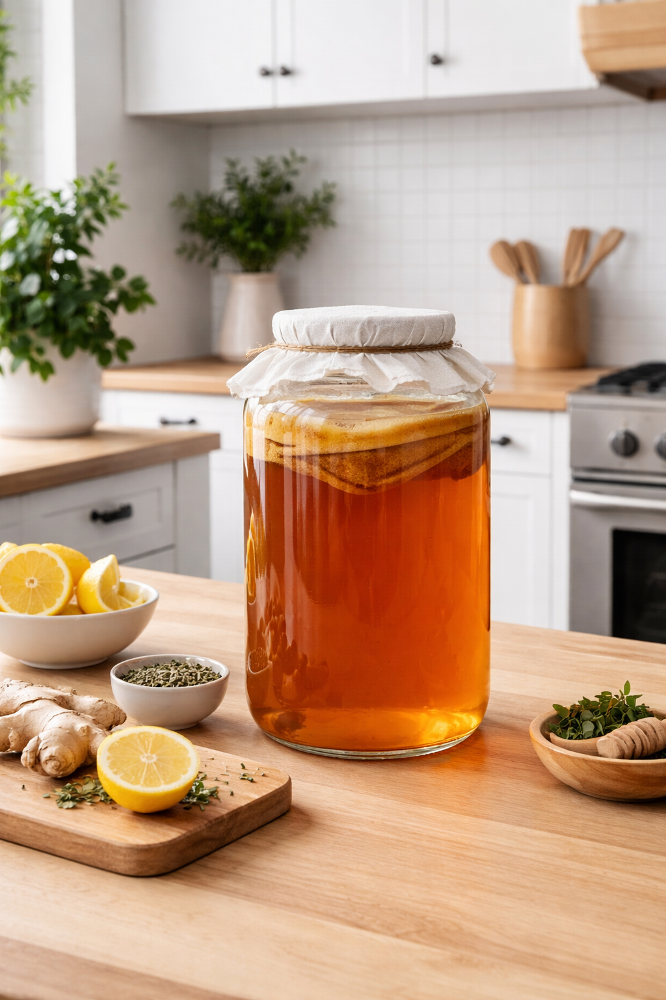
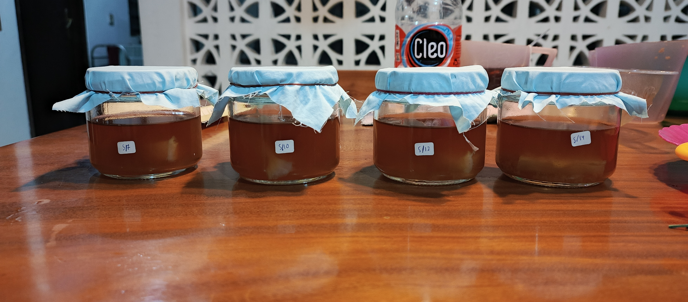
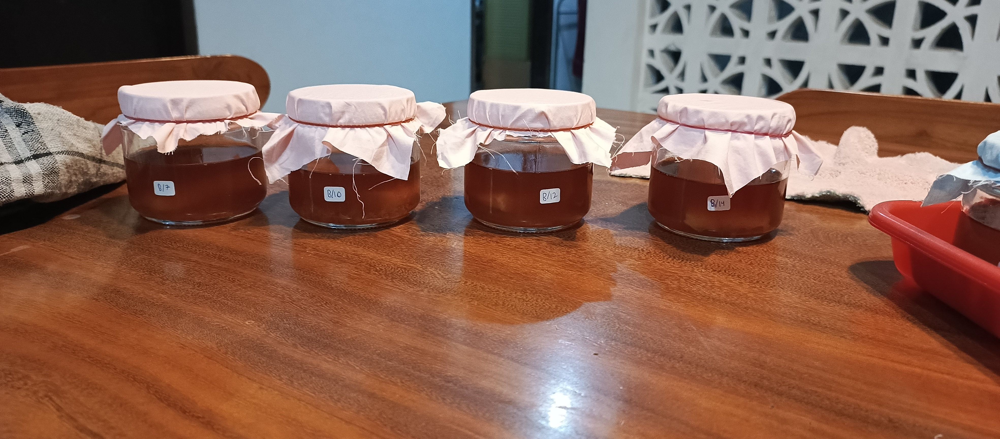

Kombucha is a fermented, effervescent, sweetened tea drink know for its tangy, vinegary taste and probiotic health benefits
as its produced by fermenting tea and sugar with Symbiotic Culture of Bacteria and Yeast or SCOBY, which its fermentation process
slowly makes the sweet tea starter into a sour but health beneficial drink, suitable for health improvements

Kombucha is a fermented tea drink made by combining sweetened tea (usually black or green tea) with a SCOBY (Symbiotic Culture of Bacteria and Yeast),
which is a living culture that converts sugar into organic acids, carbon dioxide, and small amounts of other compounds during fermentation.
The process usually takes 7–14 days, during which the yeast breaks down sugar into alcohol and the bacteria then convert much of that alcohol into acids such as acetic acid,
giving kombucha its characteristic slightly sour taste and fizzy texture. It is widely known for containing probiotics, enzymes, and antioxidants that may help support digestion and gut health,
although the exact health effects can vary depending on how it is prepared. The flavor of kombucha can range from sweet to acidic and is often influenced by added fruits,
herbs, or spices during a second fermentation stage. Because it is produced through biotechnology fermentation, kombucha is often used as an example of beneficial microbial activity in food production,
showing how microorganisms can transform simple ingredients into a drink with new taste, aroma, and nutritional characteristics
In this study, I made kombucha tea with varying sugar levels and harvested at different harvest times, with the goal of determining which samples respondents preferred.
During my observations, I also recorded changes in the pH and acidity of the tea samples to determine the differences between harvest times and sugar levels.
I conducted this research to directly study the fermentation process of this biotechnology product and understand the factors that determine kombucha tea with a balanced pH and probiotic function for consumers.
First, boil 280 ml of water until it boils. Second, pour 140 ml into a container with 60 grams of granulated sugar, and another 140 ml into a container containing 120 grams of granulated sugar. Next, pour 400 ml of mineral water to reduce the heat a little in the container, and put 3 tea bags per container. Then, stir until it makes sweet tea. Fifth, pour either a little or a lot of sweet tea first, and stir it with 60 ml of kombucha starter until it is evenly mixed, do the same with the other sweet tea. The raw kombucha tea is finished and poured 150 ml into a glass jar, put a piece of SCOBY inside, cover it tightly with a cloth, and label it. Every day after the day of preparation, as fermentation continues, record the changes in pH acidity, and remove the SCOBY from the jar and put it in the refrigerator when harvest day arrives(which are 7 days, 10 days, 12 days, and 14 days), to stop the fermentation process. Finally, when all samples are ready, please compare each sample through its sour taste, sweet taste, and pungent aroma. Kombucha tea is now ready to serve!


9D/17